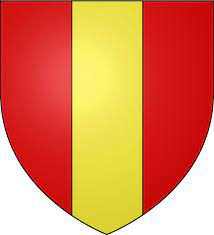

Count Bernard de Senlis
Greva av Senlis & Beauvais.

Far:
Född:
omkring 919 Somme, Picardie, Frankrike.
Död:
efter 965 Senlis, Picardie, Frankrike.
Barn med ?
Barn:
Personhistoria
919?
Födelse omkring 919 Somme, Picardie, Frankrike
>965
Död efter 965 Senlis, Picardie, Frankrike
Källor